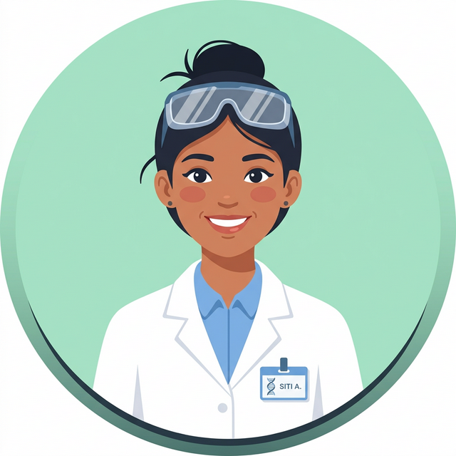
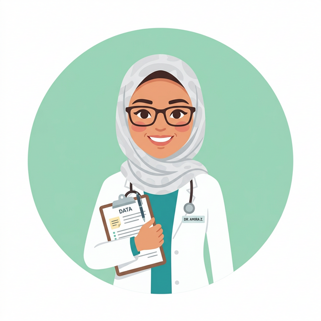
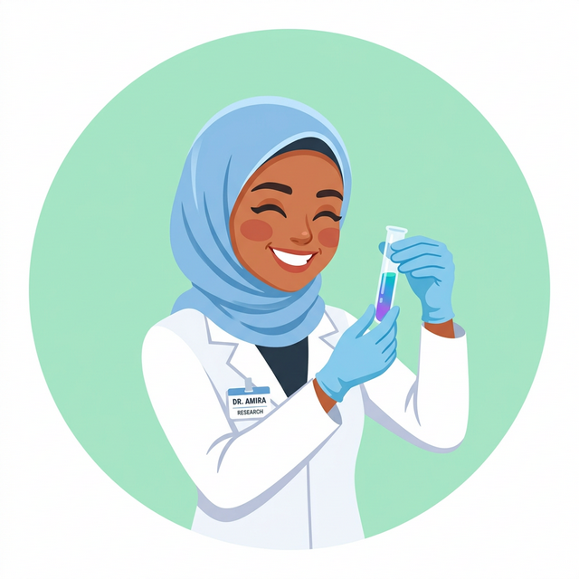
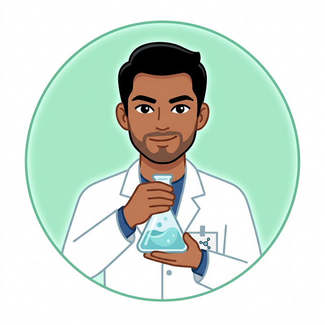
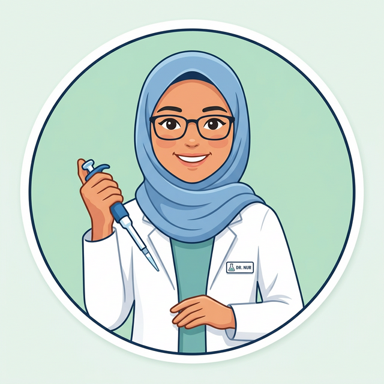

Cadangan Penambahan
Beban Kerja 2025
Pembentangan Sasaran & Wawasan Strategik bagi mencapai kecemerlangan operasi tahun 2026.
Best Our Team 🧬
Barisan penganalisa Unit Penyaringan yang berdedikasi dalam memastikan kualiti analisis yang terbaik.





Cadangan Penambahan Beban Kerja 2025
Senarai cadangan yang telah dilaksanakan dengan jayanya sepanjang tahun 2025.
| Bil | Cadangan | Ulasan |
|---|---|---|
| 1 | Pemeriksa volumetric flask | ✓ |
| 2 | Pemeriksa micropipet | ✓ |
| 3 | Pemeriksa thermometer | ✓ |
| 4 | Transfer method EG/DEG | ✓ |
| 5 | Refresh stock standard | ✓ |
| 6 | Pembersihan alat makmal | ✓ |
Cadangan Penambahan Beban Kerja 2025
Cadangan yang belum dapat dilaksanakan beserta justifikasi penangguhan.
| Bil | Cadangan yang tidak tercapai | Ulasan |
|---|---|---|
| 1 | Penyemak verifikasi alat timbang | Fokus dialihkan kepada sesi latihan teknikal bersama pegawai bagi memantapkan prosedur pengendalian alat timbang, pemantauan suhu serta kebuk wasap secara lebih sistematik sebelum pemeriksaan laporan berkala dan rutin dimulakan. |
| 2 | Penyemak suhu bilik makmal dan fridge | |
| 3 | Penyemak kebuk wasap | |
| 4 | Column performance | Ditangguhkan bagi memberi laluan kepada aktiviti method transfer dan comparative testing yang lebih mendesak pada tahun tersebut. |
| 5 | Measurement of Uncertainty | MU dilaksanakan mengikut kitaran setiap 2 tahun sekali. Pengiraan terakhir pada tahun 2024, seterusnya dijadualkan pada 2026. |
Penambahan Beban Kerja 2025
Skop penambahan beban kerja baharu yang telah diperkenalkan kepada unit.
- EDD
- Steroid
- Domperidone
- Setiap 3 bulan
- Id & Assay Asiaticoside
- Id & Assay Salvigenin
- Id & Assay Methyl & Propyl Paraben
- Screening (steroid, NSAIDs & Antibiotic)
- Id & Assay EG / DEG
- Id & Assay Volatile Compound
Wawasan Strategik 2026
Mengorak langkah ke arah pencapaian piawaian analisis yang lebih tinggi, memperkukuh keupayaan makmal, dan memacu kecemerlangan operasi Unit Penyaringan.
Sasaran 2026
1. Jenis-jenis ujian yang dijalankan — RBPQM bermula 1st touch analysis di makmal.
Sasaran 2026
2. Sampel CPF — Bilangan sampel mengikut kategori produk bagi Unit Penyaringan.
| Bil | Kategori Produk | Bilangan Sampel |
|---|---|---|
| 1 | Sampel Cawangan Penguatkuasaan Farmasi Kelantan D020-25 | 2 |
| 2 | Sampel Cawangan Penguatkuasaan Farmasi Wilayah Persekutuan | 1 |
| 3 | Sampel Cawangan Penguatkuasaan Farmasi Pulau Pinang (CPFPP) P085-25 | 6 |
| 4 | Sampel Cawangan Penguatkuasaan Farmasi Pulau Pinang (CPFPP) P088-25 | 462 |
| 5 | Sampel Cawangan Penguatkuasaan Farmasi Pulau Pinang (CPFPP) P087-25 | 95 |
Sasaran 2026
Jenis sampel dan kuantiti yang disasarkan untuk dianalisis.
| Bil | Jenis Sampel | Kuantiti Sampel |
|---|---|---|
| 3 | 2nd analyst sample CPF | 2 |
| 4 | Produk yang mengandungi bahan aktif Kumpulan Sartan, Metformin, dan Ranitidine (Pengujian impurities NDMA/NDEA) |
76 |
| 5 | Produk cecair oral yang berisiko mengandungi EG/DEG | 121 |
| 6 | Produk yang mengandungi Red Yeast Rice (pengujian penentuan kandungan lovastatin) |
40 |
| 7 | Produk dari pengilang dengan isu kawalan kualiti (input dari SAPB/SVA) (pengujian penuh) |
148 |
Sasaran 2026
8. Transfer Method : NDMA & NDEA — Agihan tugasan kepada pegawai.
Sasaran 2026
Sasaran tambahan (9–11) bagi meningkatkan kecekapan operasi makmal.
- Pengumpulan data teknikal melalui pengujian 3 aras kepekatan
- Berdasarkan keputusan pengurusan pegawai yang akan diputuskan
- 3 kali setahun
- Melibatkan semua PPF
Sasaran 2026
Pemeriksaan berkala peralatan makmal (12–15).
- Dijalankan setiap hari
- 3 alat penimbang
- Dilakukan mengikut giliran
- Sebulan sekali
- 3 alat penimbang
- Dilakukan mengikut giliran
- 3 bulan sekali
- 3 alat penimbang
- Dilakukan mengikut giliran
- 2 kali sehari (AM & PM)
- 5 check point & 2 fridge
- Dilakukan mengikut giliran
Sasaran 2026
Verifikasi peralatan dan ujian kestabilan (16–18).
- 3 bulan sekali
- 3 micropipette
- Dilakukan mengikut giliran
- 3 tahun sekali
- Verifikasi teknikal bagi 100 unit kelalang volumetrik baharu
- Melibatkan komitmen semua Penolong Pegawai Farmasi (PPF) makmal
- EDD – Feeka
- Steroid - Syed
- Domperidone – Intan
- Diuretic – Fatihah
- Dopamine - Adi
⚠️ Isu & Cabaran 2026
Halangan utama yang perlu ditangani bagi memastikan kelancaran operasi sepanjang tahun, beserta impak dan cadangan penyelesaian.
Ujian Volatile Compound dan EG/DEG berkongsi mesin yang sama namun memerlukan metode serta pertukaran turus (column) yang kerap. Ini mengganggu masa penstabilan (equilibration time) dan memanjangkan tempoh ujian.
Kelewatan Turnaround Time (TAT) sehingga 3–5 hari tambahan setiap kali pertukaran metode. Mengurangkan kapasiti analisis harian dan menjejaskan sasaran bilangan sampel tahunan.
Sukar mengatur jadual yang efisien mengikut jenis sampel, kerana peralihan konfigurasi kaedah terpaksa dilakukan secara berterusan bagi memenuhi keperluan ujian yang berbeza-beza.
Masa berlebihan digunakan untuk konfigurasi semula peralatan. Peningkapan risiko kesilapan konfigurasi yang boleh menjejaskan kualiti keputusan analisis.
⚠️ Isu & Cabaran 2026 (sambungan)
Cabaran berkaitan pengurusan teknikal dan pembangunan kemahiran pegawai.
Penganalisis perlu cuba menyelesaikan masalah teknikal instrumen secara kendiri dengan panduan vendor sebelum bantuan luar dipanggil, menyukarkan asimilasi masa dengan tuntutan beban kerja sampel harian.
Downtime instrumen yang berpanjangan (sehingga beberapa hari). Penganalisis terpaksa membahagikan masa antara troubleshooting dan analisis sampel, menjejaskan produktiviti keseluruhan.
Tuntutan untuk mengekalkan tahap kemahiran penganalisis yang tinggi merentasi pelbagai disiplin (contoh: daripada wet chemistry kepada teknik instrumental) di dalam satu masa melibatkan kepakaran pengendalian bahan kimia dan pelbagai instrumen yang singkat.
Risiko ketidakseragaman kemahiran antara pegawai. Kebergantungan tinggi kepada individu tertentu bagi kaedah tertentu, menimbulkan masalah apabila berlaku cuti atau pertukaran kakitangan.